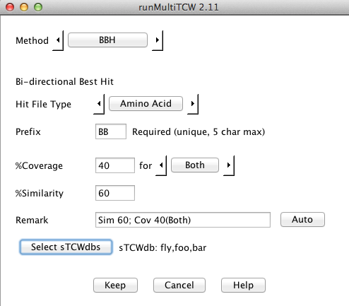
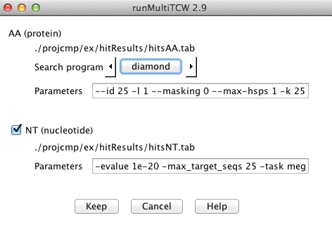
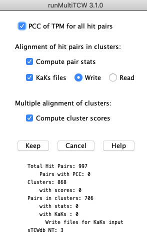
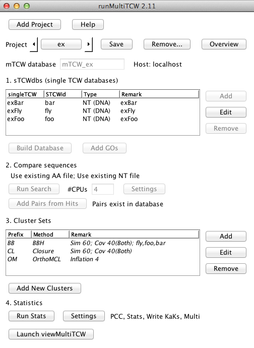
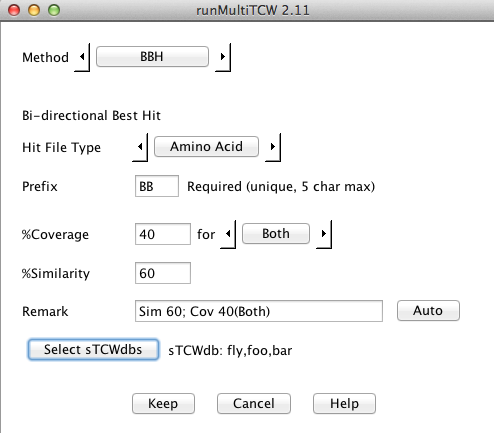
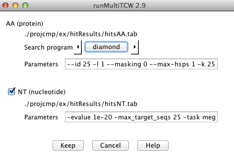
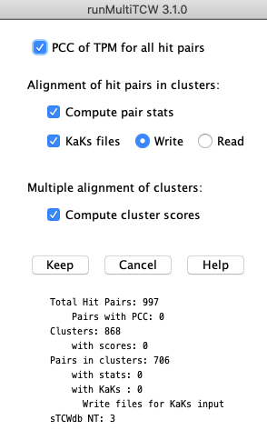

{kind=link}


{kind=link}
{kind=link}

{kind=link}

runMultiTCW
| Main Panel | Additional Panel | Example summary statistics | References |
runMultiTCW takes as input two or more singleTCW (sTCW) databases
and builds a multiTCW (mTCW) database of clustered sequences.
See mTCW UserGuide for details.
Main panel
1. Build database. Define the input sTCW databases
(see panel #1), which can created from
nucleotide sequences (NT-sTCW) and/or protein sequences (AA-sTCW).
For NT-sTCW, translated ORFs must be provided; the translated ORFs from runSingleTCW
may be used.
Then press Build database, which builds a database of all sequences, RPKM, DE, annotations and GOs.
2. Compare sequences. This creates a file of all sequences and performs a heuristic search 1 against itself to determine similar sequences. The search program and parameters can be changed (see panel #2). Add Pair from Hits. All pairs from the Hit file are entered into the database. 3. Add new clusters. Add clusters (see panel #3), where the methods are:
|
 |
4. Add Stats. Add statistics (see panel #4), as follows.
KaKs_calculator4 along with a script to run from the terminal.
KaKs_calculator has been
executed on the KaKs files. It reads the results into the database.
Additional panels | Go to top |
|
1. Add single TCW database
|
3. Add a cluster method
 |
|
2. Run Search
 |
4. Add statistics (before adding statistics)
 |
Example summary statistics | Go to top |
CLUSTER SETS: 3
Prefix Method Remark
BB BBH Sim 40; Olap 80(Eit); All pairs of sTCWs
CL Closure Sim 40; Olap 80(Eit)
OM OrthoMCL Inflation 1.5
Sizes:
Prefix =2 =3 4-5 6-10 11-15 16-20 21-25 >25 Total #Seqs
BB 606 0 0 0 0 0 0 0 606 1,212
CL 70 166 2 3 0 0 0 0 241 665
OM 40 179 4 9 0 0 0 0 232 696
Average and Stddev:
Prefix conLen sdLen SofP Trident
BB 575.51 342.60 79.49 134.28 3.41 1.68 0.736 0.215
CL 599.27 365.42 87.16 130.15 8.54 6.04 0.700 0.209
OM 609.76 377.05 96.95 128.15 8.66 7.26 0.657 0.227
PAIRS: 869
Hits
AA Dataset: Diff 789 Same 69 Similarity 76.0% Overlap 83.4%
NT Dataset: Diff 661 Same 2 Similarity 86.9% Overlap 63.9%
Aligned CDS: 784 (1.1Mb) 5-UTR: 510 (169.9kb) 3-UTR: 527 (310.3kb)
Codons Amino Acids Nucleotides
Exact 56.2% Exact 84.0% CDS gap 13.6%
Synonymous 27.8% Substitution >0 10.6% CDS diff 27.0%
Fourfold 14.3% Substitution <=0 5.4% 5UTR diff 63.1%
Twofold 10.8% 3UTR diff 71.6%
Nonsynonymous 16.0%
CDS base substitutions: 208.1kb Content: By Nucleotide By Codon
Pos1 Pos2 Pos3 Total GC CpG CpG
Transition 9.4 4.9 36.4 50.7 Both 40.4% 2.0% 1.1%
Transversion 11.3 7.7 28.6 47.6 Either 55.1% 5.6% 2.9%
ts/tv 0.73 0.61 1.11 1.07 B/E 0.746 0.407 0.444
KaKs method: YN Pairs: 765
Ka/Ks Quartiles P-value
0-0.5 743 Q1(Lower) 0.019 <1e-100 452
0.5-1 17 Q2(Median) 0.044 <1e-10 140
1-1.5 3 Q3(Upper) 0.117 <0.001 55
>=1.5 2 Other 118
References | Go to top |